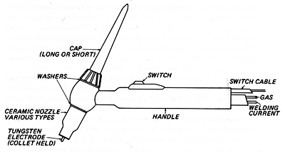
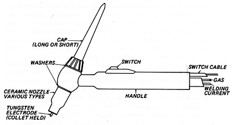

1. WORKING METHOD  Figure 37:A graphic desription of a TIG - "Gas Tungsten Arc Welding" welding torch. (Davies 1986: 153)

Figure 37:A graphic desription of a TIG - "Gas Tungsten Arc Welding" welding torch. (Davies 1986: 153)